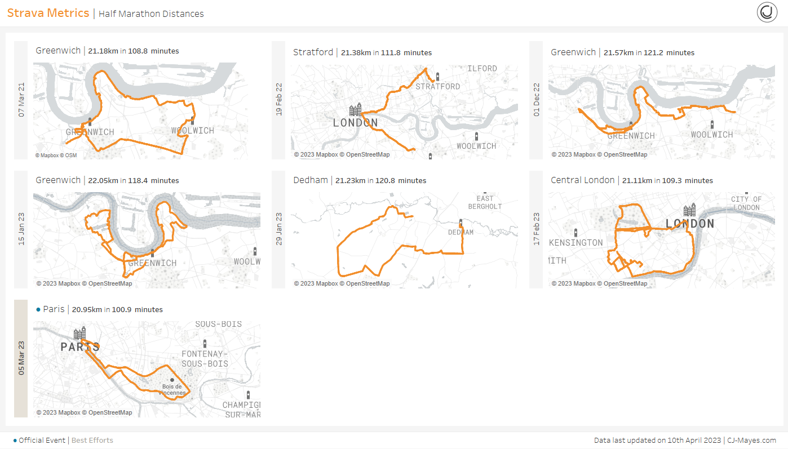
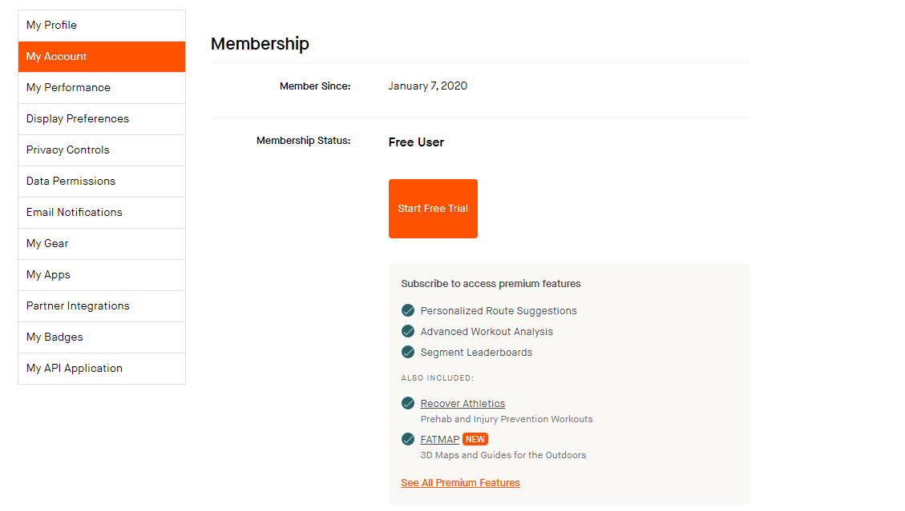
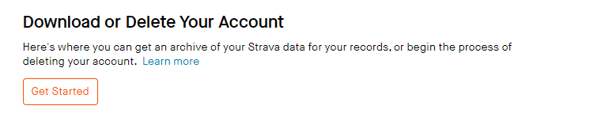
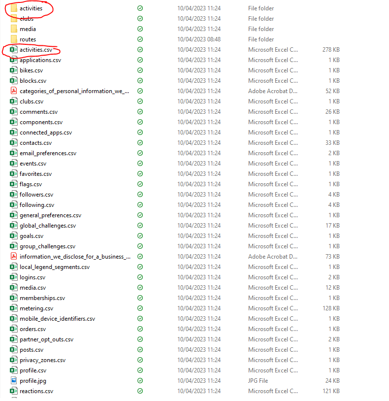
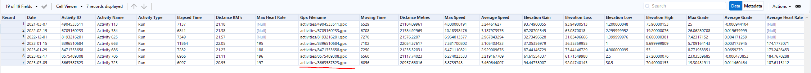
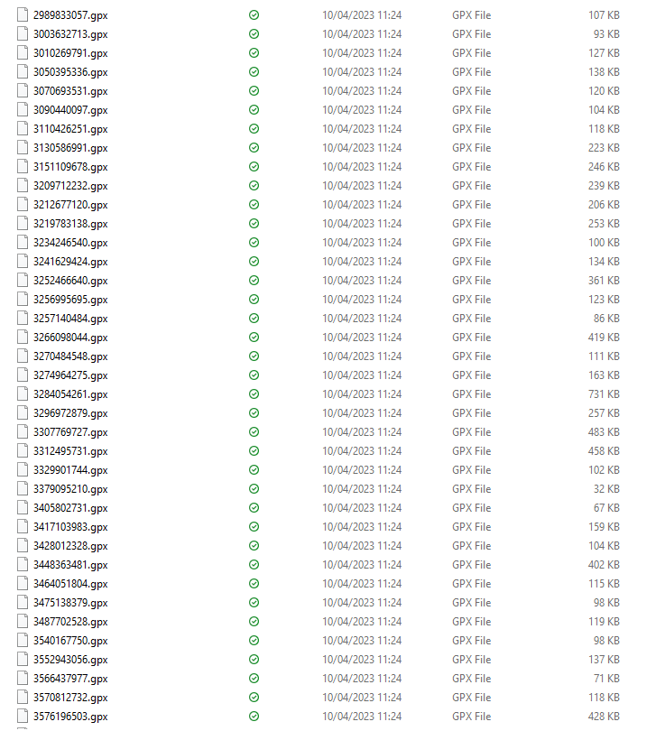
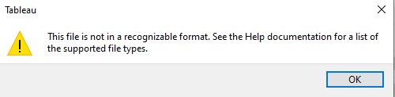
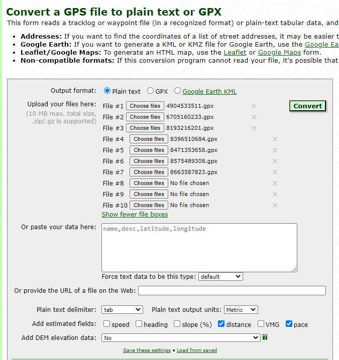
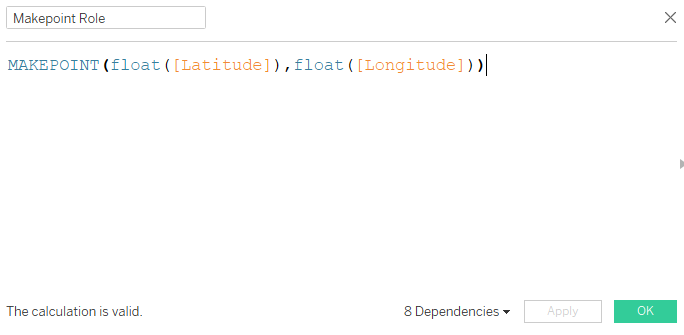
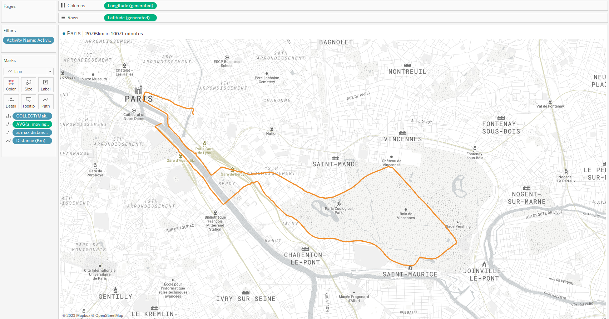

Hi all,
At the start of this year I wrote a blog on how to access Strava data through the API. You can view that blog here.
This time round we will take the short route and download all our data from Strava itself manually, with the end outcome to look at how we can actually map our data in Tableau.

So to download the data you will need to navigate to "My Account"


Click to Get started on download your stats. Once you go to download them, it will send you a link to your email associated with the account

For today we will only need to look at activities and the activities folder.

Within the activities.csv you will see an associated gpx file. These files are essentially the mappings for our different activities.

So here is some example gpx files that are associated to my account. Of course we will have some common fields to be able to join these together for example the date of the event as well as the activity ID of the gpx files.
The only problem is.... Tableau doesn't allow for gpx files, so we need to convert them into records of data.

One website that is quite popular is this GPS Visualiser website.

We will need to output these files to plain text. I will upload an example of the output into the GitRepo. You'll see in the printscreen above, I chose all the gpx files of where I ran at least 20km's.
In the GitRepo here are the files:
Strava_Workflow.yxmd - an Alteryx flow that glues to activities to the output from the GPX conversion.
Strava_Maps.hyper the final dataset that I use within the visual
data.txt - The converted GPX data
CJ_Activities - My original csv activities dataset
8663587823.gpx - the original gpx file for my Paris half mara
Then all we need to do is glue our gpx file to our original dataset. Personally I used Alteryx to do this, however this could be done solely through the joins in Tableau.

To create the map, I like to use the lat and long co-ordinates from the exported version of the gpx data that is now a text file - I added a few extra calculations for the view to be able to see the distance travelled and total time taken.
See how my watch cut me short 60m on my Paris run! Sigh.
Final thing to do is purely cosmetics.
I add the distance km to line path as it joins up the data for each of the distance logs, and amended it to be our Strava orange colour. I dialled the background colour back just using an out the box mapbox background but there is definitely a lot more we can do with these mappings in terms of the layers!
Would love to see where people take it.
By all means check out my tutorial dashboard using the TP link at the top of this blog.
Going further:
Add a different MapBox background to your visual
Chart all your different activities that have maps
Using alternative map projections in Tableau: blog by Ken Flerlage
 Going further:
Going further: